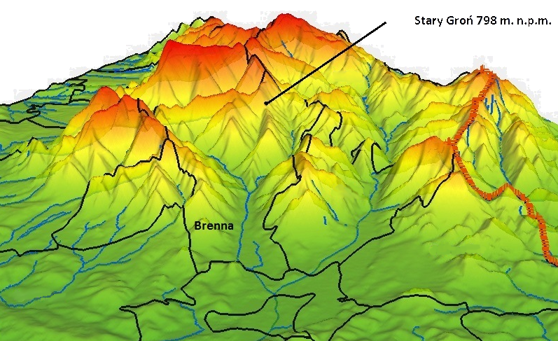

Brenna (dawniej Brina, Brena) – kraina w Polsce, położona w prowincji śląskiej, w rejonie cieszyńskim, w okręgu Breńskim. Siedziba okręgu Breńskiego, obejmującego również Górki (🤢). Oraz nasz dom. Dlatego moi przyjaciele i ja postanowiliśmy stworzyć całą historię, cały lore[1], całą "mitologię", całą fabułę na temat naszej miejscowości.
Tak ma się sprawa wielkiej wojny pomiędzy Breniakami a Hanysami oraz sprawa Górek (które bardziej opisujemy [tutaj]), do których lepiej się nie zapuszczać.
|
Brenna jako miejsce można nazwać doliną, ponieważ prawie ze wszystkich stron otaczają ją góry. Główna droga do Brennej wiedzie przez Górki, ale ostrzegam aby nie zatrzymywać się tam na noc. Obok przedstawiona jest mapa terenu. Jak widać przez Brenną prepływa rzeka - Brennica. Biegnie przez główną część Brennej i posiada dopływ o nazwie Leśnica (zgadnijcie dlaczego). Pomiędzy Brennicą a jej dopływem widnieją góry z małą doliną pośrodku - to właśnie Hołcyna. Stamtąd można dojść na Stary Groń czyli jeden z breńskich szczytów. Chociaż osobiście nie szedłbym przez Hołcynę ze względu na tamtejsze krwiożercze bestie. Wybrałbym drogę z Cetrum przez Malinę. Bukowa znajduje się na końcu Brennej przez to jest tam tak bezpiecznie. Chrobaczy jest między Bukową, a Centrum. Tamtejsze źródła zaopatrują resztę części Brennej w wodę. |
 |
| Nazwa | Szczegóły | Główny towar eksportowy |
Opis |
|---|---|---|---|
| Krzyżówka | ---------- | Brak | Miejsce wielkiej bitwy pomiędzy ludami Brennej, a Hanysami. Do dzisiaj tamtejsze pola przepełnione są spaczeniem, które przypomina o tym wydarzeniu. |
| Spalona | [klik] | Żelazo z huty | Spalona to jedno z miejsc dobrze zamieszkanych z wielką hutą żelaza oraz z (głównie) dobrymi ludźmi. Po centrum stanowi drugą największą osadę w Brennej, w której od dawna nie widać było zagrożeń innych niż nikczemni ludzie. Jest to też to miejsce, w którym podróżni i kupcy mogą odpocząć, po (niebezpiecznej) podróży przez Górki. |
| Głębiec | [klik] | Broń i wyroby z drewna | Siedziba gildii inżynierów, którzy potrafią z drewnem robić cuda. Zaopatrują pozostałe części Brennej w broń (np. granaty z szyszek lub muszkiety na trociny) oraz wszelkie inne drewniane wyroby. |
| Pinkas | [klik] | Brak | Pinkas to miejsce gdzie mają siedzibę bandyci Gimba. Co jakiś czas napadają na karawany i rabują co się da. Co nie znaczy, że nie można tam spotkać życzliwych ludzi, którzy zawsze chętnie cię ugoszczą. Tam też aktualnie mieszka potomek strzelca wyborowego Mieczysława - jednego z najbliższych przyjaciół Pilcha. |
| Leśnica | [klik] | Drewno | Najstarsza część Brennej, której mieszkańcy trudnią się głównie ścinaniem drewna. Tamtejszy lud był w Brennej jako pierwszy i jako pierwszy doświadczył agresji Hanysów. |
| Jatny | ---------- | Kamień | W Jatnym pełną parą pracują kamieniołomy, które dostarczają kamień do innych części Brennej. |
| Centrum | [klik] | Szeroko pojęty handel | Centrum to miejsce, do którego dążą wszyscy kupcy podróżujący do Brennej. Jednak to równocześnie ośrodek cywilizacji i politycznej władzy - tam ma siedzibę Wielka Rada, która wybiera nowego wójta i dokonuje ważnych decyzji w trosce o tą krainę. |
| Hołcyna | [klik] | Zabójcy smokoważek | Hołcyna to jedno z najbardziej niebezpiecznych miejsc w Brennej ze względu na mieszkające tam stworzenia. Tamtejsi zabójcy należą do najlepszych i pilnują, aby żadne hołcyńskie bestie nie wydostały się poza Hołcynę. |
| Chrobaczy | ---------- | Woda źródlana | Podobnie jak Bukowa Chrobaczy to dość spokojna dzielnica. Woda z tamtejszego potoka dzięki wodociągom jest rozprowadzana po całej Brennej. |
| Bukowa | ---------- | Drewno | Miejsce spokojne, można by nawet rzec sielankowe. Tamtejsi ludzie zajmują się wycinką drewna. Choć w porównaniu z innymi miejscami Bukowa nie może się pochwalić niczym wyjątkowym to właśnie tam narodził się Jerzy Pilch. |